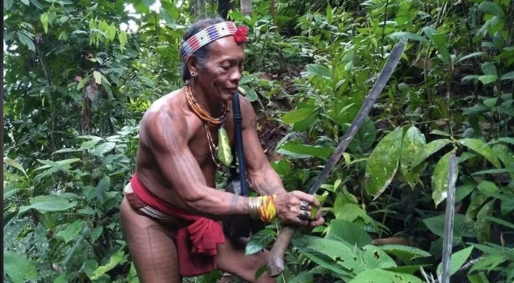
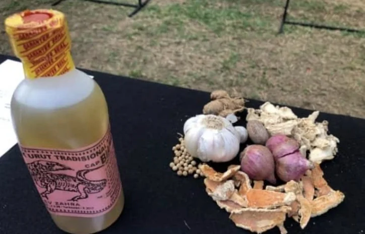

Mengenal warisan,
merawat
pengetahuan.
Perjalanan kecil ke dalam kekayaan Sumatera. Temukan tumbuhan, cerita masyarakat, dan pengetahuan yang diwariskan—dengan perspektif yang lebih bijak.
NAMA LOKAL · CERITA MASYARAKAT · SUMBER PENELITIAN
Temukan herbalnya.
Cari nama lokal, nama ilmiah, atau komunitas. Hasil herbal langsung membuka profilnya.

ALAM & PENGETAHUAN LOKALBukan sekadar ramuan.
Ini tentang ingatan.
Di balik setiap daun dan rimpang, ada cerita tentang keluarga, lingkungan, dan cara masyarakat memahami kehidupan.
Kami merangkai dokumentasi delapan komunitas menjadi ruang belajar yang terbuka: nama lokal, identitas botani, cara mengolah bahan, dan makna sebuah tradisi, dilengkapi sumber penelitian.
Temui masyarakatnyaSatu pulau.
Beragam pengetahuan.
Pilih sebuah wilayah. Biarkan rasa ingin tahu membawa Anda lebih jauh.
Kenali penjaga pengetahuan.
Delapan komunitas dalam koleksi, masing-masing dengan cerita dan konteksnya.
Komunitas terkait
Alami.
Namun, selalu aman?
Menghargai tradisi dan berpikir kritis bisa berjalan bersama. Kenali pertanyaan tentang bahan, pemanfaatan, dan penelitian herbal.
Kenali mitos & faktanya
“Sudah turun-temurun.Berarti pasti aman?”MARI PERIKSA FAKTANYA
Warisan hari ini.
Makna untuk esok.
Terhubung dengan tujuan kesehatan dan pendidikan yang lebih baik.
Setiap cerita, ada sumbernya.
Baca penelitian, pahami konteks, dan telusuri lebih jauh.